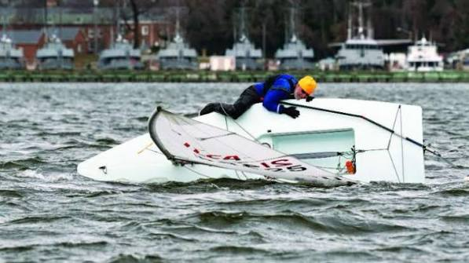

Module 8
Capsize Recovery
Every dinghy sailor capsizes eventually. The key is to stay calm, follow the correct recovery procedure, and get back underway safely.
Learning Objectives
After completing this lesson, you should be able to:
- Understand why dinghies capsize.
- Remain calm and assess the situation after a capsize.
- Right a capsized dinghy using the centerboard.
- Re-board the boat safely.
- Prevent another immediate capsize.
Why Dinghies Capsize
Capsizing is a normal part of learning to sail. Most capsizes occur because of excessive heel, sudden gusts, incorrect sail trim, or poor weight distribution. Even experienced sailors capsize when pushing the boat to its limits.
A capsize should be viewed as a learning opportunity rather than a failure. With practice, recovering from one becomes quick and routine.
Stay Calm
The first priority is the safety of everyone onboard. Stay with the boat, check that everyone is uninjured, and avoid rushing. A dinghy is much easier for rescuers to see than a person in the water.
Recovery Steps
① Check the Crew
Make sure everyone is safe, wearing a life jacket, and staying with the boat.
② Position the Boat
If possible, point the bow into the wind to reduce the chance of the boat capsizing again once upright.
③ Right the Boat
Climb onto the centerboard, hold the gunwale, and lean back using your body weight until the boat slowly returns upright.
④ Re-board
Climb aboard over the stern or the side with as little disturbance as possible, then immediately stabilize the boat.

Preventing a Second Capsize
Many sailors capsize again immediately after righting the boat. Once aboard, keep the boat flat, ease the mainsheet if necessary, steer onto a stable course, and regain control before attempting to sail away.
- Keep your weight low and centered.
- Ease the mainsheet if overpowered.
- Trim the sail only after the boat is under control.
- Take a moment to organize yourself before continuing.
Turtle Capsize
A turtle occurs when the mast points straight down and the hull turns completely upside down. Prevent this by beginning recovery as soon as possible after the initial capsize. If the boat turtles, rotate it onto its side before using the centerboard to right it.
Practice Builds Confidence
Every dinghy sailor should intentionally practice capsize recovery in shallow water under supervision. Repeating the exercise several times builds confidence and prepares you to react correctly during an unexpected capsize.
Key Takeaways
- Stay calm and remain with the boat.
- Check that everyone is safe before recovering.
- Use the centerboard and your body weight to right the dinghy.
- Re-board carefully and stabilize the boat.
- Practice capsize recovery until it becomes second nature.